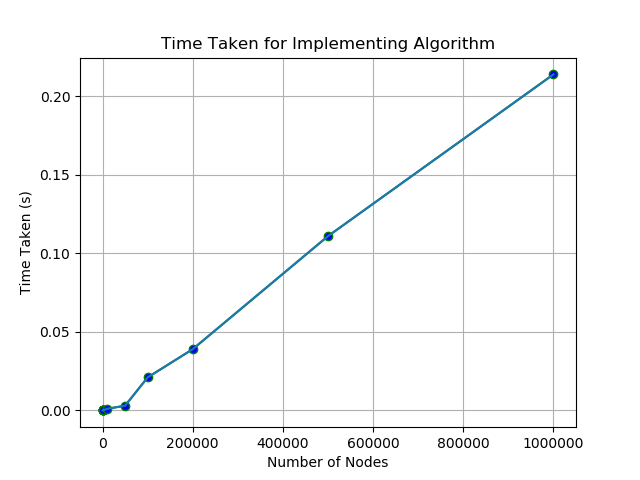
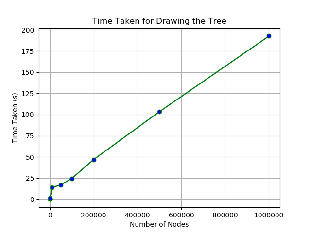

by
T. Anudeep - 2017A7PS0022H
M. Sai Karthik - 2017A7PS0260H
K. Vamsi Krishna - 2017A7PS0118H
Implementation of Tidier Algorithms
_________________________________________________________Lines are drawn by using the modified algorithm of Bresenhalm's line drawing algorithm. The basic algorithm plots lines having positive slopes less than or equal to one and such that the x-coordinate of the first point is less than the that of second point. This covers only 1/8 of the total possible cases. The modified algorithm goes as follows: two functions are made handling two cases each. One of them handles the cases if the absolute value of the slope is less than one and the x-coordinate of the first point is less than that of the second point. The other is similar to the first except it handles the cases if the absolute value of the slope is greater than one. Then another function which handles all the cases, exchanges the points if needed and calls the correct function to draw the line.
The midpoint circle drawing uses the 8-way symmetry from the horizontal and vertical axes as well as the y = x and y = -x axes about the center of the circle. The basic circle drawing algorithmis a bit modified to handle the position (or center) of the circle. Thus the circle drawing calculates all the pixels with respect to the origin but when plotting the pixels, all the pixels are plotted by a shift of the x and y coordinates of the center of the circle which is passed during the call.
All these drawing functions are included in the header file "primitives.h".
The structure node contains requried data for a node needed to implement the algorithms. The node structure contains the following data:
The class tree implements the tree data structure. All the non primitve functions are a member of this class. There is only one member variable which is a pointer to the root of the tree. The member functions of the class are:
A balanced tree of 'n' nodes gave the following timings
| Number of Nodes | Time Execution for Tidier | Time taken to draw Tree |
| 1 | 0 | 0.01 |
| 10 | 0 | 0.027 |
| 20 | 0 | 0.042 |
| 50 | 0 | 0.1 |
| 100 | 0 | 0.184 |
| 500 | 0 | 0.895 |
| 1000 | 0 | 1.489 |
| 10000 | 0.001 | 13.98 |
| 50000 | 0.003 | 14.009 |
| 100000 | 0.021 | 24.524 |
| 200000 | 0.039 | 46.847 |
| 1000000 | 0.214 | 192.562 |
As we see in the graph, the time is linear with the number of nodes. Hence the time complexity is O(n).
Here is the graph for the memory used with the number of nodes:


We have implemented the above algorithm in Visual Studio 2015 Community Edition. The limitations of these include lack of stack memory, hence vector dynamic allocation of memory was implemented instead. Even after implementing dynamic memory, the maximum order of 10 which was able to run was 7. Thus the maximum number of nodes possible 10^7 in the program. A few arrays were declared to implement the Tidy algorithm. Since the arrays are assigned stack memory, there is some wastage in memory.
OpenGL has the origin at the lower left corner, however the origin is required at the upper left corner. For this, the pixel drawing function, doesn't draw the pixel (x, y) but draws the pixel (x, max - y) where max is the y dimension in pixels of the window